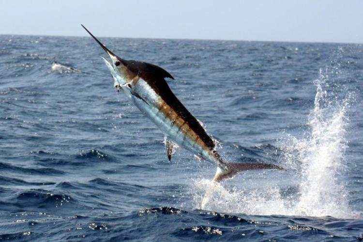

Marlin eat many types of fish including
They prefer small, oily fish due to their high energy content. In some regions, Marlon are also known to consume squid and crustaceans when fish are scarce.
Marlin prefer to hunt during dusk and dawn when visibility is low, giving them an advantage over their prey. They often use stealth and quick bursts of speed to ambush their targets.
Researchers have observed that Marlin tend to avoid larger or more aggressive fish, such as sharks, but will defend themselves if threatened. In captivity, they’ve accepted a variety of seafood, but remain highly selective and intelligent eaters.

Marlin hunting a fish